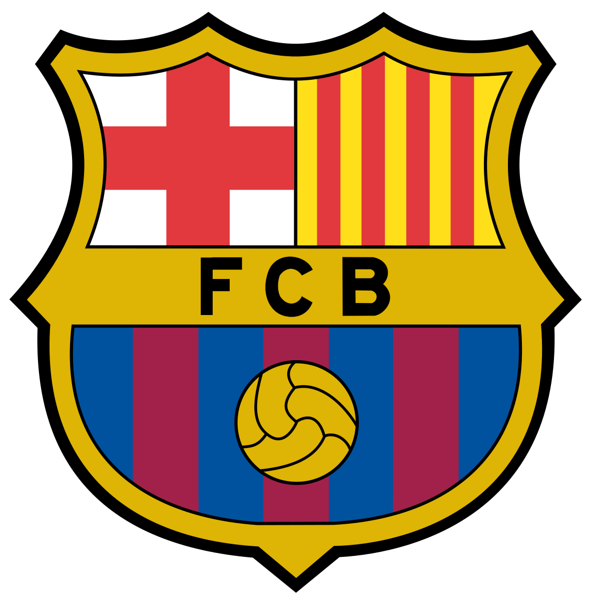
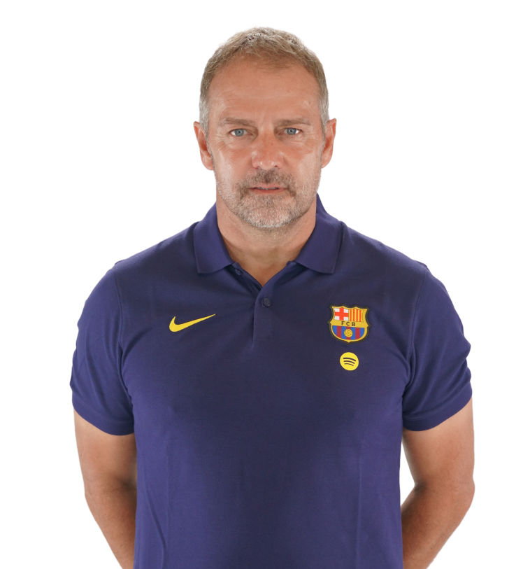
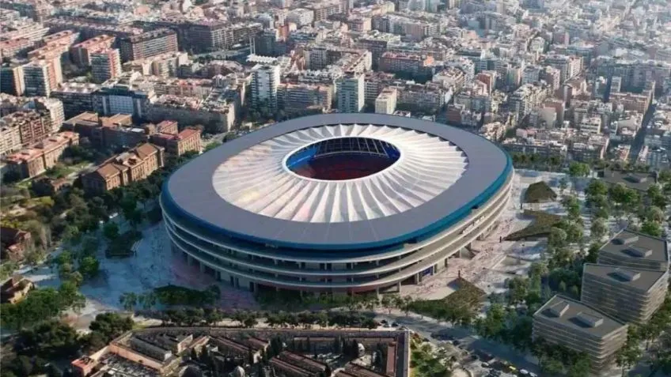

Treinador: Hans Flick
Hansi Flick é um treinador alemão nascido em Heidelberg, reconhecido pela sua gestão de grupo pragmática e pela capacidade de restaurar a competitividade máxima em plantéis de elite. Após uma carreira histórica como adjunto e selecionador da Alemanha, atingiu o auge mundial no Bayern de Munique, consolidando-se como um dos técnicos mais titulados da atualidade antes de abraçar o desafio de liderar o projeto desportivo do FC Barcelona.

Estádio: Spotify Camp Nou
O FC Barcelona joga no Spotify Camp Nou, um estádio lendário e monumental que, após a sua remodelação profunda, se tornou na joia da coroa do desporto mundial. Situado no bairro de Les Corts, o novo recinto combina uma estrutura de vanguardismo tecnológico com uma capacidade expandida para cerca de 105 mil lugares, mantendo-se como o maior e mais imponente estádio da Europa.

Estilo de Jogo:
O estilo de jogo de Hansi Flick no FC Barcelona em 2026 consolidou-se como uma evolução vertical do tradicional DNA Barça, priorizando a intensidade física e a objetividade em vez da posse de bola meramente contemplativa.
"Més que un club!"